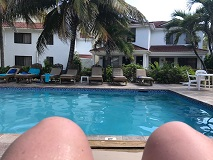
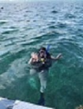
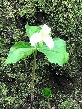
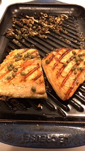
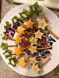
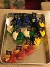
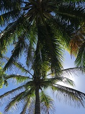
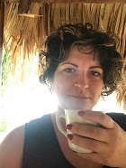
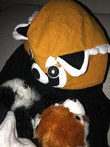

Bunnies, Belize, Babies, and more. It wasn't until developing this site that I realized how many of my favorite things begin with the letter B!
Bunnies
Bunnies have always been my favorite animal. A few reasons immediately come to mind:
Their little noses are just so darn cute!
When they hop and bounce it is far more entertaining than simple walking or running that other animals do.
They can be litter box trained.
Their waste is excellent fertilizer (and far less stinky than other pets)!
They are incapable of vomiting.
Belize
Having always loved travel far and near I was lucky enough to be introduced to Belize in 1998. I immediately fell in love with this country and am excited to share some of the reasons...
Proximity to the coral reef is excellent for SCUBA diving.
You can easily spend equal time on the beach/in the water and exploring the jungle.
The people of Belize are known for their kindness and sense of humor.
Rich in culture & history you will learn something new every time you visit.
THe food... YUM!
Babies
My love for babies began as young as I can remember. I enjoyed babysitting (hey, another B!) from the age of 11 on. Having my own children has been the most rewarding experience in life, and something I always knew I wanted. But why babies?
Every moment of their being they are learning something new, and as older humans we get to observe this. It is fascinatin!
Their love is unconditional.
Every act of helping them meet basic phsyical needs or engaging and helping them build emotinal connecations is an opportunity to make a huge difference in a life.
Bilingual
Learning languages has always been a passion of mine. In fact when I was little I would just make up my own! Perhaps this is why the world of coding is so fascinating to me, after all it really is just another language.
I started learning Spanish in High School. I intended to Minor in Spanish but wasn't satisfied with how much I had learned so continued on to achieve a second degree in college.
Italian came next. Though not starting with this language until college I have found that retention is much more difficult.
Someday I would love to learn additional languages, likely in this order...
Creole
Latin
Portuguese
What about the non-B's?
There are plenty of areas of interest that DON'T start with the letter B.
Swimming

SCUBA Diving

Walking and Nature (they go hand in hand after all!)

Making and listening to music
Cooking

Creating memorable birthday parties
 
Travel - near and far

Coffee! (black, with cream, with sugar, fancy, hot, iced, regular, decaf...it's all good)

And so much more!

The beauty of this world we live in is that new experiences are endless and with the right mindset we can learn something every single day.